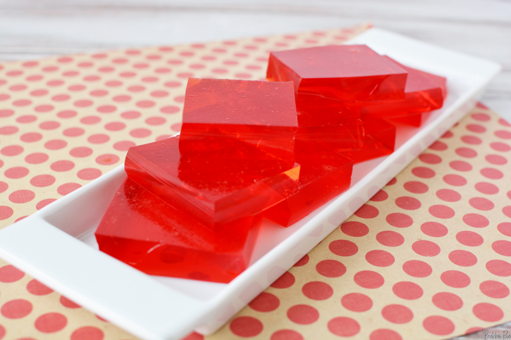

Jell-O's Jello

Description
There's about 10,000 flavors of jello out there. I recommend strawberry. Grandma's version included pineapple chunks and cottage cheese, so for the sake of the reader, I'm publishing the modern, as-written jello preparation technique.
Ingredients
- 1 box (6 oz.) Jell-O gelatin dessert
- 2 cups boiling water
- 2 cups cold water
Steps
- Add boiling waater to gelatin mix; stir 2 min. until completely dissolved.
- Stir in cold water.
- Refrigerate 4 hours or until firm.